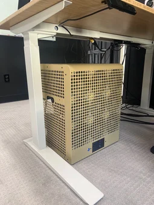

We are the tiny corp
What's the goal of the tiny corp?
To accelerate. We will commoditize the petaflop and enable AI for everyone.
We write and maintain tinygrad, the fastest growing neural network framework (over 22000 GitHub stars)
It's extremely simple, and breaks down the most complex networks into 4 OpTypes
 UnaryOps operate on one tensor and run elementwise. RELU, LOG, RECIPROCAL, etc...
BinaryOps operate on two tensors and run elementwise to return one. ADD, MUL, etc...
ReduceOps operate on one tensor and return a smaller tensor. SUM, MAX
MovementOps operate on one tensor and move the data around, copy-free with ShapeTracker. RESHAPE, PERMUTE, EXPAND, etc...
UnaryOps operate on one tensor and run elementwise. RELU, LOG, RECIPROCAL, etc...
BinaryOps operate on two tensors and run elementwise to return one. ADD, MUL, etc...
ReduceOps operate on one tensor and return a smaller tensor. SUM, MAX
MovementOps operate on one tensor and move the data around, copy-free with ShapeTracker. RESHAPE, PERMUTE, EXPAND, etc...
But how...where are your CONVs and MATMULs? Read the code to solve this mystery.
Work at the tiny corp
We
are now funded and
hiring full time software engineers. Very talented interns okay.
See
jobs that need doing to judge if you might be a good fit.
I'm supposed to pitch you emotionally on why you should work here.
It will give you that meaning you are searching for, and I'm only half kidding.
We are actually trying to make AI for everyone.
work@tinygrad.org to apply, but really, get hired by
doing bounties.
If you haven't contributed to tinygrad, your application won't be considered.
Jobs that need doing
If you come work here, this is a list to get started. Assumes some familiarity with the
tinygrad codebase.
Getting AMD on MLPerf
There's a
GitHub project for this. Can you make the models train?
$500 per model to get tinygrad to train from scratch to the required error within 12 hours.
Learn more in the #mlperf-bounties channel on our
Discord
Fastest Stable Diffusion and LLaMA on M1
For LLaMA: Write the specializedjit and support int8.
For Stable Diffusion: Clean up to use BS=2, write winograd conv and kernel search. Target is 0.324 s/it on M1 Max.
Qualcomm DSP Support
Switch over comma's DSP based driver monitoring model to tinygrad.
A new architecture to port!
Max out all the GEMMs
NVIDIA: Support local memory tensors. Some work in
this branch.
Apple M1: Support using Tensor Cores and simdgroup_float8x8. Some work in
this branch.
AMD: Write assembly backend for the linearizer.
Multi GPU training
Trees, rings, and collnets oh my! AMD gets us P2P for free.
Kernel Search
There's a ton of ways to generate equivalent kernels, enumerate them and search them.
Maybe with ML based search running in tinygrad. Self improvement?
Kernel Combining (lazy.py)
ResNets don't fuse as nicely as they could because which reduce do you fuse the elementwise with?
BatchNorm at training and GroupNorm always is 4 kernels. Merge them!

The tinybox
738 FP16 TFLOPS
144 GB GPU RAM
5.76 TB/s RAM bandwidth
28.7 GB/s disk read bandwidth (benchmarked)
AMD EPYC CPU, 32 cores
2x 1500W (two 120V outlets, can power limit for less)
Runs 70B FP16 LLaMA-2 out of the box using tinygrad
$15,000
Preorder a tinybox today! (just $100)
(specs subject to change. all preorders fully refundable until your tinybox ships. price doesn't include shipping. estimated timeline 2-6 months)
FAQ:
Is tinygrad used anywhere?
tinygrad is used in
openpilot to run the driving model on the Snapdragon 845 GPU. It replaces
SNPE, is faster, supports loading onnx files, supports training, and allows for attention (SNPE only allows fixed weights).
Is tinygrad inference only?
No! It supports full forward and backward passes with autodiff.
This is implemented at a level of abstraction higher than the accelerator specific code, so a tinygrad port gets you this for free.
How can I use tinygrad for my next ML project?
Follow the installation instructions on
the tinygrad repo. It has a similar API to PyTorch, yet simpler and more refined. Less stable though while tinygrad is in alpha, so be warned, though it's been fairly stable for a while.
When will tinygrad leave alpha?
When we can reproduce a common set of papers on 1 NVIDIA GPU 2x faster than PyTorch. We also want the speed to be good on the M1. ETA, Q2 next year.
How is tinygrad faster than PyTorch?
For most use cases it isn't yet, but it will be. It has three advantages:
It compiles a custom kernel for every operation, allowing extreme shape specialization.
All tensors are lazy, so it can aggressively fuse operations.
The backend is 10x+ simpler, meaning optimizing one kernel makes everything fast.
How can the tiny corp work for me?
Email me, george@tinygrad.org. We are looking for contracts and sponsorships to improve various aspects of tinygrad.
How can I work for the tiny corp?
See
hiring above. Contributions to
tinygrad on GitHub always welcome, and a good way to get hired.
Can I invest in the tiny corp?
Invest with your PRs.